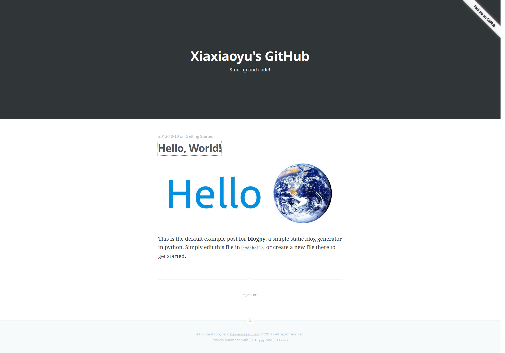

blogpy
2013-10-28blogpy(Forked from Travisred) 
A static blog generator written in python. You can see it in action at git.xtimer.org.
Requirements:
Python 2.7
Python-Markdown package
How to use:
1. git clone https://github.com/travisred/blogpy.git
2. edit settings.py to fit your site
3. edit static/comment to add your disqus code
4. add a markdown-formatted post to md -- you can see an example at md/hello
5. python build.py
6. upload the "site" directory to host
Note: as of v2.0, links for posts changed from /md-file-title.html to /md-file-title/.
Update:
1. Add disqus comment support
2. Fix missing '/' bug
Licensed under GPL v3.0.
comments powered by Disqus